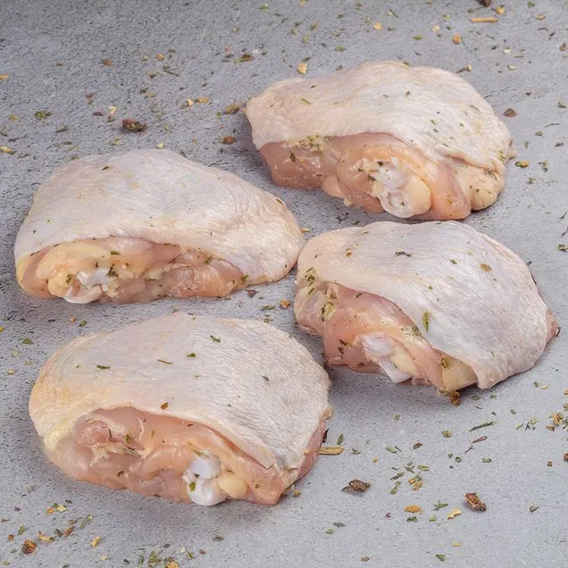
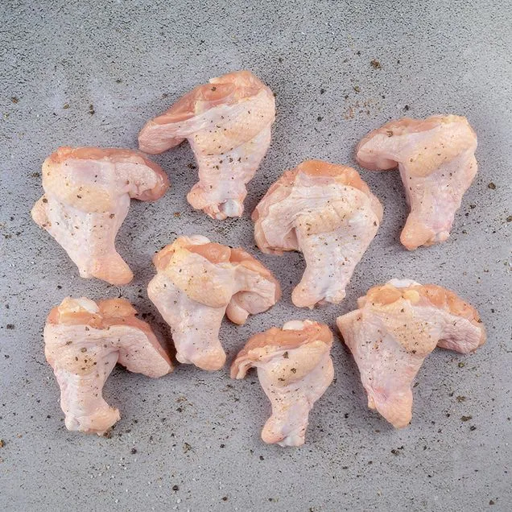

Cortes do Chef
Since 2024
Cortes Bovinos
Costela
A costela é um corte de carne bovina suculento e saboroso, conhecido pela sua rica marmoreação e textura macia, ideal para grelhados e assados lentos.
R$110,00 / kg
Picanha
A picanha é um corte nobre de carne bovina, apreciado por sua suculência e textura macia. Reconhecida pela camada generosa de gordura que a torna extremamente saborosa.
R$220,00 / kg
Contra Filé
Contrafilé é um corte de carne bovina macio e suculento, com uma boa quantidade de marmoreio, proporcionando um sabor intenso e uma textura suave quando grelhado.
R$90,00 / kg
Tomahawk
Tomahawk é um corte premium de carne bovina, caracterizado pelo osso longo e pela generosa porção de carne entremeada de gordura, garantindo um sabor intenso e suculento, perfeito para churrascos.
R$190,00 / kg
Lagarto
Lagarto é um corte de carne bovina conhecido por sua magreza e versatilidade. Ideal para assados lentos ou fatiado em preparações como rosbife, oferecendo uma textura tenra e sabor suave.
R$60,00 / kg
Cortes Suínos
Picanha Suína
A picanha suína é um corte suculento e saboroso, retirado da parte superior do lombo do porco. Com sua textura macia e marmoreio delicado, é perfeita para grelhar ou assar.
R$130,00 / kg
Lombo Suíno

O lombo suíno é um corte magro e tenro, retirado da região próxima à espinha dorsal do porco. Com sua carne macia e versátil, é ideal para assar, grelhar ou até mesmo para preparar deliciosos filés.
R$100,00 / kg
Costela Suína
A costela suína é um corte suculento e rico em sabor. Com sua carne macia e marmorizada, é perfeita para ser cozida lentamente, resultando em uma explosão de sabor e textura.
R$95,00 / kg
Linguiça Toscana
A linguiça toscana é uma especialidade italiana, feita com carne suína temperada com ervas aromáticas e especiarias. Com seu sabor robusto e textura suculenta, é uma escolha clássica para churrascos.
R$45,00 / kg
Paleta Suína
A paleta suína é um corte macio e suculento, retirado da parte dianteira do porco. Com sua carne marmorizada e saborosa, é ideal para assados lentos ou cozidos, resultando em pratos cheios de sabor e textura.
R$80,00 / kg
Cortes De Aves
Filé De Peito
O Filé de Peito é um corte magro e suculento. É ideal para grelhar, assar ou cozinhar, oferecendo uma opção saudável e versátil para diversas receitas.
R$35,00 / kg
Sobrecoxa
A sobrecoxa é um corte suculento, conhecido por sua textura macia e sabor intenso. Ideal para grelhados, assados ou cozidos lentamente.
R$28,00 / kg
Coxa da Asa
A coxa da asa, também chamada de drumette, é uma porção suculenta e carnuda da asa do frango apreciada por sua combinação de carne macia e sabor pronunciado. Perfeita para petiscos e grelhados.
R$40,00 / kg
Linguiça De Frango

A linguiça de frango é feita com carne de frango moída e temperos variados, como alho, pimenta e ervas. Versátil na culinária, pode ser grelhada, assada e frita.
R$60,00 / kg
Frango Inteiro
O frango inteiro é uma opção versátil e econômica, oferecendo uma variedade de cortes, desde peitos suculentos até coxas e sobrecoxas. É uma escolha popular para refeições em família.
R$95,00 / kg

Peixaria
Filé De Salmão
O filé de salmão é um corte nobre e suculento, apreciado por sua textura macia e sabor delicado, ideal para pratos gourmet e refeições saudáveis.
R$105,00 / kg
Filé De Merluza
O filé de merluza é um corte versátil e leve, conhecido por sua carne branca e firme, perfeito para diversas preparações culinárias, desde grelhados simples até pratos mais elaborados.
R$55,00 / kg
Filé De Tilápia
O filé de tilápia é um corte delicado e de sabor suave, apreciado por sua textura firme e baixo teor de gordura, ideal para pratos leves e saudáveis, como grelhados e assados.
R$65,00 / kg
Camarão
O camarão, com sua carne tenra e saborosa, é um ingrediente culinário versátil, adequado para uma ampla variedade de pratos, desde simples grelhados até elaboradas paellas.
R$85,00 / kg
Lombo De Atum
O lombo de atum, com sua textura firme e sabor intenso, é uma escolha sofisticada para pratos de frutos do mar, perfeito para grelhados rápidos ou preparações mais elaboradas.
R$240,00 / kg
Cortes Exóticos
Bife De Bisão
O bife de bisão, com sua textura suculenta e sabor intenso, é uma escolha robusta e saudável, ideal para quem procura uma alternativa nutritiva ao bife de carne bovina tradicional.
R$340,00 / kg
Costela De Jacaré
A costela de jacaré é um corte exótico e saboroso, com uma textura macia e leve semelhante à do frango. Delicie-se com este prato incomum que oferece uma experiência culinária única.
R$410,00 / kg
Posta De Tubarão
A posta de tubarão é um corte de carne exótico, com uma textura firme e sabor delicado do mar. Desfrute deste ingrediente incomum em pratos que exibem a diversidade culinária dos frutos do mar.
R$720,00 / kg
Picanha De Zebra

A picanha de zebra é um corte exótico com sabor distinto, oferecendo uma experiência gastronômica única para os entusiastas culinários mais ousados.
R$360,00 / kg
Filé De Alce

O filé de alce, com sua suculenta textura e sabor marcante, é uma iguaria que cativa os apreciadores de carnes exclusivas, garantindo uma experiência gastronômica singular e memorável.
R$270,00 / kg
Sobre Nós:
Cortes do Chefe é o destino online definitivo para os amantes de carne que buscam qualidade premium e
variedade excepcional. Nossa plataforma oferece uma experiência única, onde os clientes podem explorar uma
ampla seleção dos melhores cortes de carne, cuidadosamente selecionados e preparados por especialistas em
carne.
No Cortes do Chefe, celebramos a arte da carne, oferecendo uma variedade de cortes suculentos e saborosos,
desde os clássicos até os mais exclusivos. Trabalhamos em estreita colaboração com produtores e fornecedores
confiáveis para garantir a procedência e a qualidade de cada peça, proporcionando aos nossos clientes a
confiança de que estão adquirindo os melhores produtos.
Além de oferecer uma ampla gama de opções de carne bovina, suína, de aves e outras especialidades, também
fornecemos informações úteis sobre os cortes, dicas de preparo e receitas deliciosas para inspirar os amantes
da culinária a explorar novos sabores e técnicas.
No Cortes do Chefe, nossa missão é fornecer uma experiência de compra conveniente, educativa e deliciosa para
todos os apaixonados por carne, garantindo que cada refeição seja uma experiência verdadeiramente excepcional.
Seja você um mestre na churrasqueira ou um entusiasta culinário, no Cortes do Chefe, você encontrará tudo o
que precisa para elevar sua experiência gastronômica a um novo patamar.